This is a written version of Lecture #3, Iteration #2.
In this lecture we learn about the script context (the third validation argument), handling time, and parameterized contracts.
The code in this lecture uses Plutus commit
81ba78edb1d634a13371397d8c8b19829345ce0d.
:::
Since the last lecture there has been an update to the playground, which is present in the Plutus commit we are using for this lecture (see note above).
There was an issue whereby the timeout, which was hardcoded into the playground was too short. This would cause simulations to fail if they took longer than the hardcoded timeout.
There is now an option when you start the Plutus Playground Server which allows you to specify the timeout. The following example sets the timeout to 120 seconds.
plutus-playground-server -i 120s
When we explained the (E)UTxO model in the first lecture, we mentioned that in order to unlock a script address, the script attached to the address is run, and that script gets three pieces of information - the datum, the redeemer and the context.
In the second lecture, we saw examples of that, and we saw how it actually works in Haskell.
We saw the low-level implementation, where all three arguments are
represented by the Data type. We also saw that in practice this is not
used.
Instead, we use the typed version, where the datum and redeemer can be
custom types (as long as they implement the IsData type class), and
where the third argument is of type ScriptContext.
In the examples we have seen so far we have looked at the datum and the redeemer, but we have always ignored the context. But the context is, of course, very important. So, in this lecture we will start looking at the context.
The ScriptContext type is defined in package plutus-ledger-api,
which is a package that, until now, we haven\'t needed. But now we do
need it, and it is included in this week\'s .cabal file. It is defined
in module Plutus.V1.Ledger.Contexts.
data ScriptContext = ScriptContext {
scriptContextTxInfo :: TxInfo,
scriptContextPurpose :: ScriptPurpose
}
It is a record type with two fields.
The second field is of type ScriptPurpose, which is defined in the
same module. It defines for which purpose a script is being run.
data ScriptPurpose
= Minting CurrencySymbol
| Spending TxOutRef
| Rewarding StakingCredential
| Certifying DCert
For us, the most important is Spending. This is what we have talked
about so far in the context of the (E)UTxO model. This is when a script
is run in order to validate a spending input for a transaction.
The Minting purpose comes into play when you want to define a native
token. Its purpose us to describe under which circumstances the native
token can be minted or burned.
There are also two new brand new purposes - Rewarding - related to
staking and Certifying - related to stake delegation.
The most interesting field, the one that contains the actual context, is
scriptContextTxInfo, which is of type TxInfo, also defined in the
same module.
data TxInfo = TxInfo
{ txInfoInputs :: [TxInInfo] -- ^ Transaction inputs
, txInfoOutputs :: [TxOut] -- ^ Transaction outputs
, txInfoFee :: Value -- ^ The fee paid by this transaction.
, txInfoForge :: Value -- ^ The 'Value' forged by this transaction.
, txInfoDCert :: [DCert] -- ^ Digests of certificates included in this transaction
, txInfoWdrl :: [(StakingCredential, Integer)] -- ^ Withdrawals
, txInfoValidRange :: SlotRange -- ^ The valid range for the transaction.
, txInfoSignatories :: [PubKeyHash] -- ^ Signatures provided with the transaction, attested that they all signed the tx
, txInfoData :: [(DatumHash, Datum)]
, txInfoId :: TxId
-- ^ Hash of the pending transaction (excluding witnesses)
} deriving (Generic)
It describes the spending transaction. In the (E)UTxO model, the context
of validation is the spending transaction and its inputs and outputs.
This context is expressed in the TxInfo type.
There are a couple of fields that are global to the whole transaction
and in particular we have the list of all the inputs txInfoInputs and
the list of all the outputs txInfoOutputs. Each of those has a variety
of fields to drill into each individual input or output.
We also see fields for fees txFee, the forge value txInfoForge, used
when minting or burning native tokens.
Then we have a list of delegation certificates in txInfoDCert and a
field txInfoWdrl to hold information about staking withdrawals.
The field txInfoValidRange, which we will look at in much more detail
in a moment, defines the slot range for which this transaction is valid.
txInfoSignatories is the list of public keys that have signed this
transaction.
Transactions that spend a script output need to include the datum of the
script output. The txInfoData field is a list associating datums with
their respective hashes. If there is a transaction output to a script
address that carries some datum, you don\'t need to include the datum,
you can just include the datum hash. However, scripts that spend an
output do need to include the datum, in which case it will be included
in the txInfoData list.
Finally, the txInfoId field is the ID of this transaction.
While there is a lot of information contained in this txInfo type, for
our first example of how to use the third argument to validation, we
will concentrate on the txInfoValidRange field.
This brings us to an interesting dilemma. We have stressed several times that the big advantage that Cardano has over something like Ethereum is that validation can happen in the wallet. But we have also noted that a transaction can still fail on-chain following validation if, when the transaction arrives on the blockchain, it has been consumed already by someone else. In this case, the transaction fails without having to pay fees.
What should never happen under normal circumstances is that a validation script runs and then fails. This is because you can always run the validation under exactly the same conditions in the wallet, so it would fail before you ever submit it.
So that is a very nice feature, but it is not obvious how to manage time in that context. Time is important, because we want to be able to express that a certain transaction is only valid before or only valid after a certain time has been reached.
We saw an example of this in lecture one - the auction example, where
bids are only allowed until the deadline has been reached, and the
close endpoint can only be called after the deadline has passed.
That seems to be a contradiction, because time is obviously flowing. So, when you try to validate a transaction that you are constructing in your wallet, the time that you are doing that can, of course, be different than the time that the transaction arrives at a node for validation. So, it\'s not clear how to bring these two together so that validation is deterministic, and to guarantee that if, and only if, validation succeeds in the wallet, it will also succeed in the node.
The way Cardano solves that, is by adding the slot range field
txInfoValidRange to a transaction, which essentially says \"This
transaction is valid between this and that slot\".
When a transaction gets submitted to the blockchain and validated by a node, then before any scripts are run, some general checks are made, for example that all inputs are present and that the balances add up, that the fees are included and so on.
One of those checks that happens before validation is to check that the slot range is valid. The node will look at the current time and check that it falls into the valid slot range of the transaction. If it does not, then validation fails immediately without ever running the validator scripts.
So, if the pre-checks succeed, then this means that the current time does fall into the valid slot range. This, in turn, means that we are completely deterministic again. The validation script can simply assume that it is being run at a valid slot.
By default, a script will use the infinite slot range, one that covers all slots starting from the genesis block and running until the end of time.
There is one slight complication with this, and that is that Ouroboros, the consensus protocol powering Cardano doesn\'t use POSIX time, it uses slots. But Plutus uses real time, so we need to be able to convert back and forth between real time and slots. This is no problem so long as the slot time is fixed. Right now it is one second, so right now it is easy.
However, this could change in the future. There could be a hard fork with some parameter change that would change the slot time. We can\'t know that in advance. We don\'t know what the slot length will be in ten years, for example.
That means that slot intervals that are defined for transactions mustn\'t have a definite upper bound that is too far in the future. It must only be as far in the future as it is possible to know what the slot length will be. This happens to be something like 36 hours. We know that if there is going to be a hard fork, we would know about it at least 36 hours in advance.
Let\'s look at this POSIXTimeRange type, which is defined in
Plutus.V1.Ledger.Time.
type POSIXTimeRange = Interval POSIXTime.
It is a type synonym for Interval POSIXTime and we see that Interval
is defined by a LowerBound and an UpperBound.
Interval
ivFrom :: LowerBound a
inTo :: UpperBound a
If we drill into LowerBound we see the constructor
data LowerBound a = LowerBound (Extended a) Closure
Closure is a synonym for Bool and specifies whether a bound is
included in the Interval or not.
Extended can be NegInf for negative infinity, PosInf for positive
infinity, or Finite a.
We also find some helper functions including the member function which
checks if a given a is part of a given Interval, so long as the type
of a is a subtype of Ord, which is the case for POSIXTime.
member :: Ord a => a -> Interval a -> Bool
member a i = i `contains` singleton a
interval is a smart constructor for the Interval type which creates
an Interval with an inclusive upper and lower bound.
interval :: a -> a -> Interval a
interval s s' = Interval (lowerBound s) (upperBound s')
Then we have from which constructs an Interval which starts at a
and lasts until eternity.
from :: a -> Interval a
from s = Interval (lowerBound s) (UpperBound PosInf True)
And we have to, which is the opposite. It constructs an Interval
starting from the genesis block up to, and including a.
to :: a -> Interval a
to s = Interval (LowerBound NegInf True) (upperBound s)
always is the default Interval which includes all times.
always :: Interval a
always = Interval (LowerBound NegInf True) (UpperBound PosInf True)
And we have the opposite, never, which contains no slots.
never :: Interval a
never = Interval (LowerBound PosInf True) (UpperBound NegInf True)
There is also the singleton helper, which constructs an interval which
consists of just one slot.
singleton :: a -> Interval a
singleton s = interval s s
The function hull gives the smallest interval containing both the
given intervals.
hull :: Ord a => Interval a -> Interval a -> Interval a
hull (Interval l1 h1) (Interval l2 h2) = Interval (min l1 l2) (max h1 h2)
The intersection function determines the largest interval that is
contained in both the given intervals. This is an Interval that starts
from the largest lower bound of the two intervals and extends until the
smallest upper bound.
intersection :: Ord a => Interval a -> Interval a -> Interval a
intersection (Interval l1 h1) (Interval l2 h2) = Interval (max l1 l2) (min h1 h2)
The overlaps function checks whether two intervals overlap, that is,
whether there is a value that is a member of both intervals.
overlaps :: Ord a => Interval a -> Interval a -> Bool
overlaps l r = isEmpty (l `intersection` r)
contains takes two intervals and determines if the second interval is
completely contained within the first one.
contains :: Ord a => Interval a -> Interval a -> Bool
contains (Interval l1 h1) (Interval l2 h2) = l1 <= l2 && h2 <= h1
And we have the before and after functions to determine, if a given
time is, respectively, before or after everything in a given Interval.
before :: Ord a => a -> Interval a -> Bool
before h (Interval f _) = lowerBound h < f
after :: Ord a => a -> Interval a -> Bool
after h (Interval _ t) = upperBound h > t
Let\'s have a play in the REPL.
Prelude Week03.Homework1> import Plutus.V1.Ledger.Interval
Prelude Plutus.V1.Ledger.Interval Week03.Homework1>
Let\'s construct the Interval between 10 and 20, inclusive.
Prelude Plutus.V1.Ledger.Interval Week03.Homework1> interval (10 :: Integer) 20
Interval {ivFrom = LowerBound (Finite 10) True, ivTo = UpperBound (Finite 20) True}
We can check whether a value is a member of an interval:
Prelude Plutus.V1.Ledger.Interval Week03.Homework1> member 9 $ interval (10 :: Integer) 20
False
Prelude Plutus.V1.Ledger.Interval Week03.Homework1> member 10 $ interval (10 :: Integer) 20
True
Prelude Plutus.V1.Ledger.Interval Week03.Homework1> member 12 $ interval (10 :: Integer) 20
True
Prelude Plutus.V1.Ledger.Interval Week03.Homework1> member 20 $ interval (10 :: Integer) 20
True
Prelude Plutus.V1.Ledger.Interval Week03.Homework1> member 21 $ interval (10 :: Integer) 20
False
We can use the from constructor. Here the lower bound is again a
finite slot, but the upper bound is positive infinity.
Prelude Plutus.V1.Ledger.Interval Week03.Homework1> member 21 $ from (30 :: Integer)
False
Prelude Plutus.V1.Ledger.Interval Week03.Homework1> member 30 $ from (30 :: Integer)
True
Prelude Plutus.V1.Ledger.Interval Week03.Homework1> member 300000 $ from (30 :: Integer)
True
And the to constructor. Here the lower bound is negative infinity,
while the upper bound is a finite slot number.
Prelude Plutus.V1.Ledger.Interval Week03.Homework1> member 300000 $ to (30 :: Integer)
False
Prelude Plutus.V1.Ledger.Interval Week03.Homework1> member 31 $ to (30 :: Integer)
False
Prelude Plutus.V1.Ledger.Interval Week03.Homework1> member 30 $ to (30 :: Integer)
True
Prelude Plutus.V1.Ledger.Interval Week03.Homework1> member 7 $ to (30 :: Integer)
True
Now, let\'s try the intersection function on the Interval from 10 to
20 and the Interval from 18 to 30.
Prelude Plutus.V1.Ledger.Interval Week03.Homework1> intersection (interval (10 :: Integer) 20) $ interval 18 30
Interval {ivFrom = LowerBound (Finite 18) True, ivTo = UpperBound (Finite 20) True}
As expected, we get the Interval that runs from 18 to 20, inclusive.
We can check whether one Interval contains another.
Prelude Plutus.V1.Ledger.Interval Week03.Homework1> contains (to (100 :: Integer)) $ interval 30 80
True
Prelude Plutus.V1.Ledger.Interval Week03.Homework1> contains (to (100 :: Integer)) $ interval 30 100
True
Prelude Plutus.V1.Ledger.Interval Week03.Homework1> contains (to (100 :: Integer)) $ interval 30 101
False
We see that as soon as the second Interval extends to 101, it is no
longer fully contained within the Interval that runs to 100.
However, if we check with overlaps, then it will be true because there
are elements, such as 40, that are contained in both intervals.
Prelude Plutus.V1.Ledger.Interval Week03.Homework1> overlaps (to (100 :: Integer)) $ interval 30 101
True
Prelude Plutus.V1.Ledger.Interval Week03.Homework1> overlaps (to (100 :: Integer)) $ interval 101 110
False
Imagine you want to give a gift of Ada to a child. You want the child to own the Ada, but you only want the child to have access to it he or she turns eighteen.
Using Plutus, it is very easy to implement. As our first contract that will look at the context argument, we will implement a contract that implements a vesting scheme. Money will be put into a script and then it can be retrieved by a certain person, but only once a certain deadline has been reached.
We start by copying the IsData contract from lecture two into a new
module called Vesting.
The first step is to think about the types for the datum and redeemer.
For datum, it makes sense to have two pieces of information, the beneficiary and the deadline. So, let\'s define this type:
data VestingDatum = VestingDatum
{ beneficiary :: PubKeyHash
, deadline :: POSIXTime
} deriving Show
PlutusTx.unstableMakeIsData ''VestingDatum
In order to know if someone can spend this script output, two pieces
information are required, i.e. the beneficiary\'s signature and the time
of the transaction. In this case, both those pieces of information are
contained in the transaction itself. This means that we don\'t need any
information in the redeemer, so we can just use () for the redeemer.
mkValidator :: VestingDatum -> () -> ScriptContext -> Bool
We need to check two conditions.
We could probably just write this in one go, but we will write it in a more top-down fashion and delegate to some helper functions.
mkValidator dat () ctx =
mkValidator dat () ctx = traceIfFalse "beneficiary's signature missing" signedByBeneficiary &&
traceIfFalse "deadline not reached" deadlineReached
where
info :: TxInfo
info = scriptContextTxInfo ctx
To check that the transaction is signed by the beneficiary, we can get
the public key of the beneficiary from the datum and pass it, along with
the transaction information to the txSignedBy function.
signedByBeneficiary :: Bool
signedByBeneficiary = txSignedBy info $ beneficiary dat
How do we check that the deadline has passed?
Let\'s consider a transaction with a validity that crosses the deadline, which is shown as the uppermost range in the above diagram.
Recall that before the validator script is run, other checks are made, including the time check. The node checks that the current time falls into the valid range of the transaction and only then is the validator run. So we know that, if we are in the validator, the current time lies somewhere within the validity interval.
In the case of the range that crosses the deadline, the validator code cannot know whether the current time is before or after the deadline. In this case, the validator must declare that the transaction is invalid.
The second example in the diagram, however, is fine. We still don\'t know what the current time is exactly, but we know that whatever the time is, it will be after the deadline.
So, what we are checking for is that the whole validity interval is to
the right of the deadline. One way to do this is to use the contains
function to check whether the validity interval is fully contained
within the interval that starts from the deadline and extends until the
end of time.
deadlineReached :: Bool
deadlineReached = contains (from $ deadline dat) $ txInfoValidRange info
That completes the validation logic. Let\'s take care of some boilerplate.
data Vesting
instance Scripts.ValidatorTypes Vesting where
type instance DatumType Vesting = VestingDatum
type instance RedeemerType Vesting = ()
typedValidator :: Scripts.TypedValidator Vesting
typedValidator = Scripts.mkTypedValidator @Vesting
$$(PlutusTx.compile [|| mkValidator ||])
$$(PlutusTx.compile [|| wrap ||])
where
wrap = Scripts.wrapValidator @VestingDatum @()
We will focus more on the wallet part of the script later, but here are the changes.
In addition to some new LANGUAGE pragmas and some extra imports, we
have created a GiveParams type, and modified the grab endpoint to
require no parameters.
The VestingSchema type defines the endpoints that we want to expose to
the user. As in our last example, give will be used by the user who
puts funds into the contract, then grab will be used by the user
wanting to claim the funds.
type VestingSchema =
.\/ Endpoint "give" GiveParams
.\/ Endpoint "grab" ()
So what parameters do we need for give? The endpoint will create a
UTxO at the vesting script address with an amount and a datum. If you
recall, our datum contains the beneficiary and the deadline. So, there
are three pieces of information that we must pass to the give
endpoint.
data GiveParams = GiveParams
{ gpBeneficiary :: !PubKeyHash
, gpDeadline :: !POSIXTime
, gpAmount :: !Integer
} deriving (Generic, ToJSON, FromJSON, ToSchema)
The grab endpoint doesn\'t require any parameters because the
beneficiary will just look for UTxOs sitting at the script address and
can then check whether they are the beneficiary and whether the deadline
has passed. If so, they can consume them.
Let\'s quickly look at the give endpoint.
give :: AsContractError e => GiveParams -> Contract w s e ()
give gp = do
let dat = VestingDatum
{ beneficiary = gpBeneficiary gp
, deadline = gpDeadline gp
}
tx = mustPayToTheScript dat $ Ada.lovelaceValueOf $ gpAmount gp
ledgerTx <- submitTxConstraints typedValidator tx
void $ awaitTxConfirmed $ txId ledgerTx
logInfo @String $ printf "made a gift of %d lovelace to %s with deadline %s"
(gpAmount gp)
(show $ gpBeneficiary gp)
(show $ gpDeadline gp)
First we compute the datum we want to use, and we can get both pieces of
information from the GiveParams which is passed into the function.
Then, for the transaction, we add a constraint that there must be an
output at this script address with the datum that we just defined and a
certain number of lovelace, which we also get from the GiveParams.
The rest of the function is as before, just with a different log message.
The grab endpoint is a bit more involved.
There can be many UTxOs at this script address and some of them might not be suitable for us, either because we are not the beneficiary, or because the deadline has not yet passed. If we try to submit a transaction when there are no suitable UTxOs, we will pay fees, but get nothing in return.
grab :: forall w s e. AsContractError e => Contract w s e ()
grab = do
now <- currentTime
pkh <- pubKeyHash <$> ownPubKey
utxos <- Map.filter (isSuitable pkh now) <$> utxoAt scrAddress
if Map.null utxos
then logInfo @String $ "no gifts available"
else do
let orefs = fst <$> Map.toList utxos
lookups = Constraints.unspentOutputs utxos <>
Constraints.otherScript validator
tx :: TxConstraints Void Void
tx = mconcat [mustSpendScriptOutput oref $ Redeemer $ PlutusTx.toData () | oref <- orefs] <>
mustValidateIn (from now)
ledgerTx <- submitTxConstraintsWith @Void lookups tx
void $ awaitTxConfirmed $ txId ledgerTx
logInfo @String $ "collected gifts"
where
isSuitable :: PubKeyHash -> POSIXTime -> TxOutTx -> Bool
isSuitable pkh now o = case txOutDatumHash $ txOutTxOut o of
Nothing -> False
Just h -> case Map.lookup h $ txData $ txOutTxTx o of
Nothing -> False
Just (Datum e) -> case PlutusTx.fromData e of
Nothing -> False
Just d -> beneficiary d == pkh && deadline d <= now
First, we get the current time and calculate our public key hash. We
then look up all the UTxOs at this address and filter them using the
isSuitable helper function, which is defined in the where clause.
It first checks the datum hash, and, if it finds it, it attempts to look
up the corresponding datum. Recall that the producing transaction, in
this case give doesn\'t have to supply the datum, it need only supply
the datum hash. However, in our case we need to have the datum available
to the grab endpoint, so the give endpoint does provide the datum.
If the grab endpoint finds the datum, it must deserialise it to the
Vesting type.
If all of this succeeds we can check whether we are the beneficiary and whether the deadline has passed.
At this point, utxos contains all the UTxOs that we can consume. If we
find none, then we just log a message to that effect. If there is at
least one, then we construct one transaction that consumes all of them
as inputs and pays the funds to our wallet.
As lookups, we provide the list of UTxOs as well as the validator
script. Recall that, in order to consume UTxOs at this address, the
spending transaction must provide the validation script.
We then create a transaction that spends all the suitable UTxOs along
with a constraint that it must validate in the Interval which
stretches from now until the end of time. If we don\'t provide the
interval here, then validation will fail, because the default interval
is from genesis until the end of time. The on-chain validation would
reject this as it needs an interval that is fully contained in the
interval stretching from the deadline until the end of time.
We could use the singleton Interval now, but, if there were any
issues, for example network delays, and the transaction arrived at a
node a slot or two later, then validation would no longer work.
The, we just bundle up the endpoints.
endpoints :: Contract () VestingSchema Text ()
endpoints = (give' `select` grab') >> endpoints
where
give' = endpoint @"give" >>= give
grab' = endpoint @"grab" >> grab
Then there is some boilerplate which is just used in the playground.
mkSchemaDefinitions ''VestingSchema
mkKnownCurrencies []
First, let\'s add a third wallet. We are going to create a scenario where Wallet 1 makes two gifts to Wallet 2 with different deadlines and also makes one gift to Wallet 3.
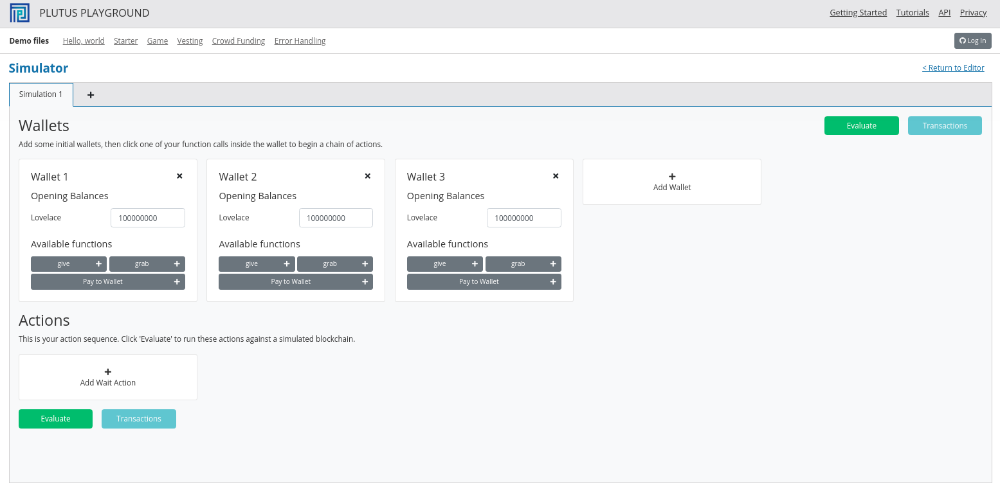
Normally it would be possible to submit both give transactions in the
same slot, but the way our code is implemented, we wait for
confirmation, which means we need to add a wait action. This is maybe
not the best way to do it, but that\'s how it is for the time being.
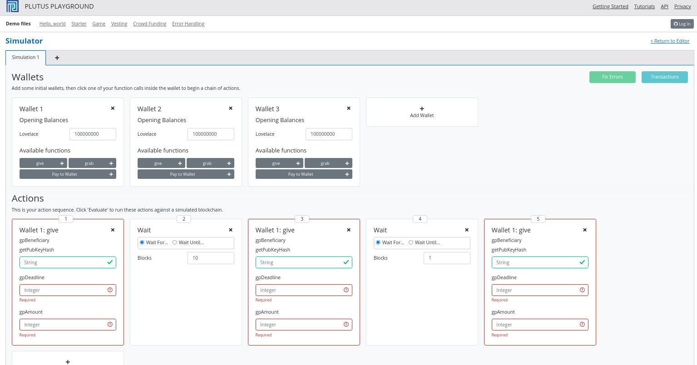
Here we run into our first problem. We need to supply the beneficiary address, but there is no way in the playground to get the public key hash of a wallet.
But we can get it from the REPL.
Prelude Week03.Homework1> :l src/Week03/Vesting.hs
Ok, one module loaded.
Prelude Week03.Vesting> import Ledger
Prelude Ledger Week03.Vesting> import Wallet.Emulator
Prelude Ledger Wallet.Emulator Week03.Vesting> pubKeyHash $ walletPubKey $ Wallet 2
39f713d0a644253f04529421b9f51b9b08979d08295959c4f3990ee617f5139f
Prelude Ledger Wallet.Emulator Week03.Vesting> pubKeyHash $ walletPubKey $ Wallet 3
dac073e0123bdea59dd9b3bda9cf6037f63aca82627d7abcd5c4ac29dd74003e
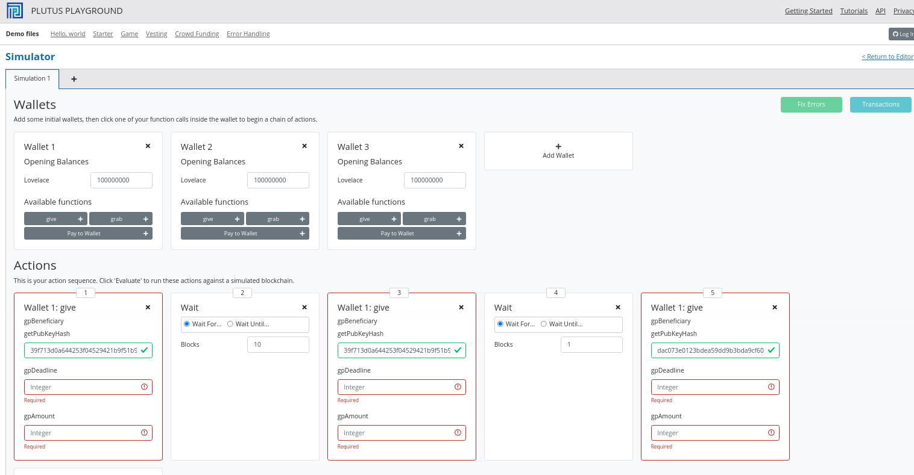
The next problem is the deadline. In the last lecture we saw how to convert between slots and POSIX times. This has changed. Previously you just needed a slot and out came a POSIX time. Now there is a second argument.
Prelude Ledger Wallet.Emulator Week03.Vesting> import Ledger.TimeSlot
Prelude Ledger Wallet.Emulator Ledger.TimeSlot Week03.Vesting> :t slotToBeginPOSIXTime
slotToBeginPOSIXTime :: SlotConfig -> Slot -> POSIXTime
There are also versions of slotToBeginPOSIXTime that have a begin and
an end time. This is because a slot is not just a point in time, it\'s a
duration in time.
So what is this SlotConfig?
Prelude Ledger Wallet.Emulator Ledger.TimeSlot Week03.Vesting> :i SlotConfig
type SlotConfig :: *
data SlotConfig
= SlotConfig {scSlotLength :: Integer, scZeroSlotTime :: POSIXTime}
-- Defined in ‘Ledger.TimeSlot’
instance Eq SlotConfig -- Defined in ‘Ledger.TimeSlot’
instance Show SlotConfig -- Defined in ‘Ledger.TimeSlot’
It takes the slot length and the time at which slot zero starts.
So now we have to find out what SlotConfig to use for the playground.
Luckily, it\'s the default. For that we need to use the Data.Default
module.
Prelude Ledger Wallet.Emulator Ledger.TimeSlot Week03.Vesting> import Data.Default
Prelude Ledger Wallet.Emulator Ledger.TimeSlot Data.Default Week03.Vesting> def :: SlotConfig
SlotConfig {scSlotLength = 1000, scZeroSlotTime = POSIXTime {getPOSIXTime = 1596059091000}}
Now we can use slotToBeginPOSIXTime with the default config to get the
POSIX time for slot 10 and slot 20.
Prelude Ledger Wallet.Emulator Ledger.TimeSlot Data.Default Week03.Vesting> slotToBeginPOSIXTime def 10
POSIXTime {getPOSIXTime = 1596059101000}
Prelude Ledger Wallet.Emulator Ledger.TimeSlot Data.Default Week03.Vesting> slotToBeginPOSIXTime def 20
POSIXTime {getPOSIXTime = 1596059111000}
And we can use these in the playground. We\'ll use slot 10 as the
deadline for the first and third gives and slot 20 for the second
give. We\'ll also give 10 Ada in each case.
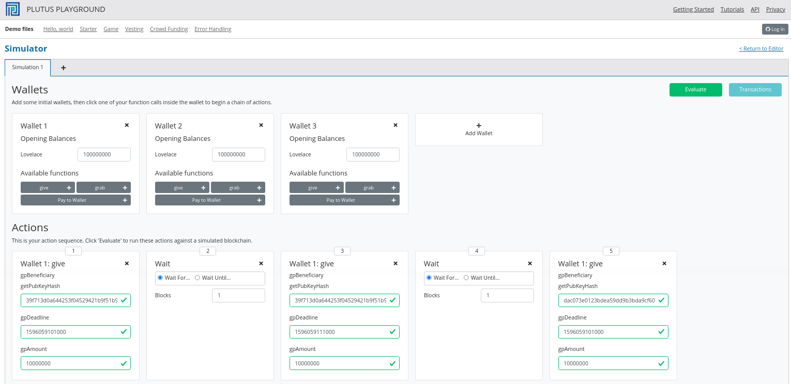
Let\'s create a scenario where everything works. Wallet 3 grabs at slot
10 when the deadline for Wallet 3 has passed, and Wallet 2 grabs at slot
20, when both the Wallet 2 deadlines have passed. We will use the
Wait Until.. option for this.
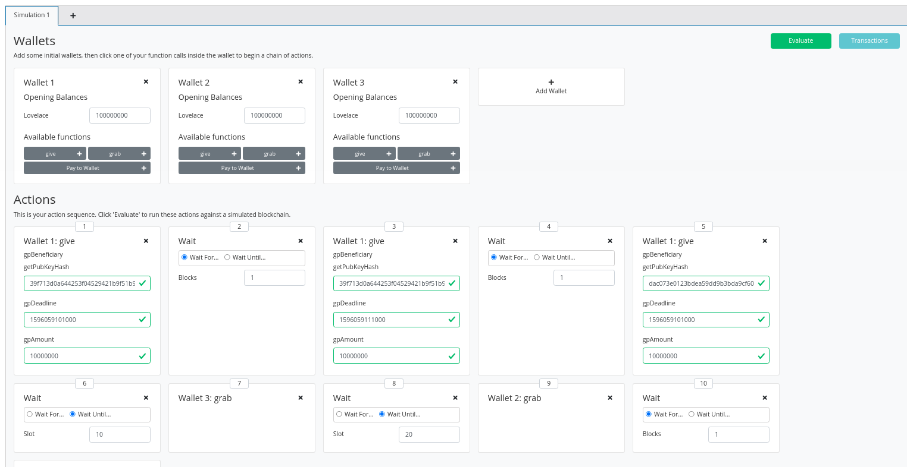
After evaluation, we first see the Genesis transaction.
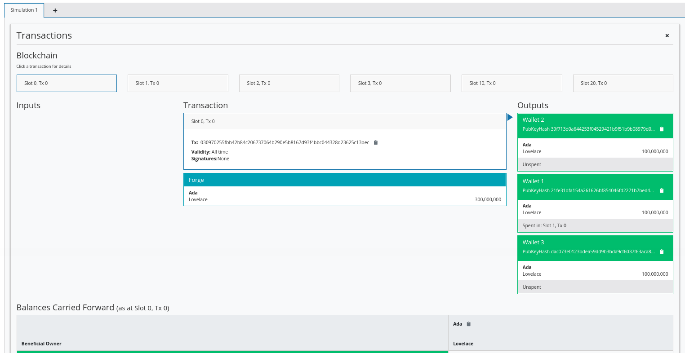
If we look at the next transaction, we see the gift from Wallet 1 to Wallet 2 with the deadline of 10. Here, ten Ada get locked in the script address.
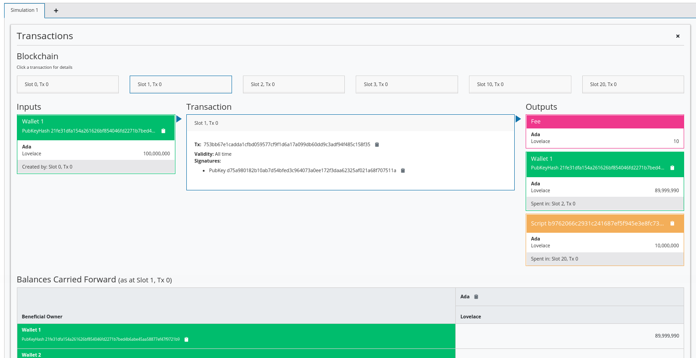
The next transaction is the gift from Wallet 1 to Wallet 2 with the deadline of 20. A new UTxO is now created at the script address with ten Ada.
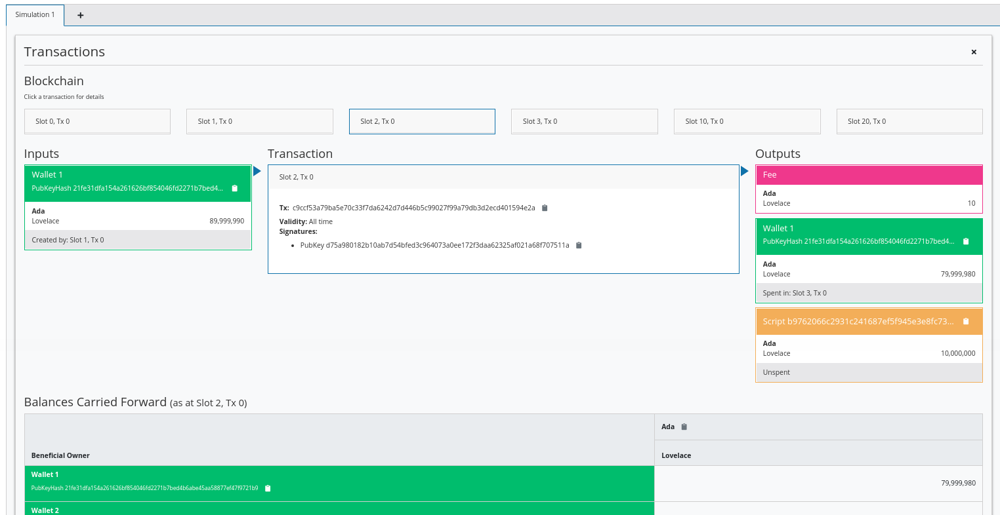
And the third gift, this time to Wallet 3, with a deadline of 10. Wallet 1 now has about 70 Ada, and another UTxO is created with 10 Ada locked at the script address.
At slot 10, Wallet 3 grabs successfully. The third UTxO is the input, some fees are paid, and then the remainder of the lovelace is sent to Wallet 3.
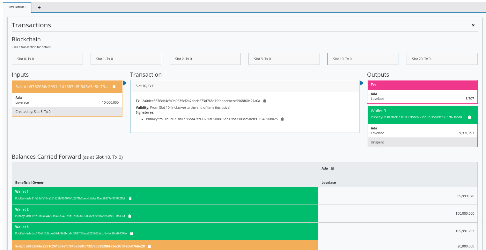
Then at slot 20, Wallet 2 successfully grabs both the UTxOs for which they are the beneficiary. This time the fee is higher because two validators have to run.
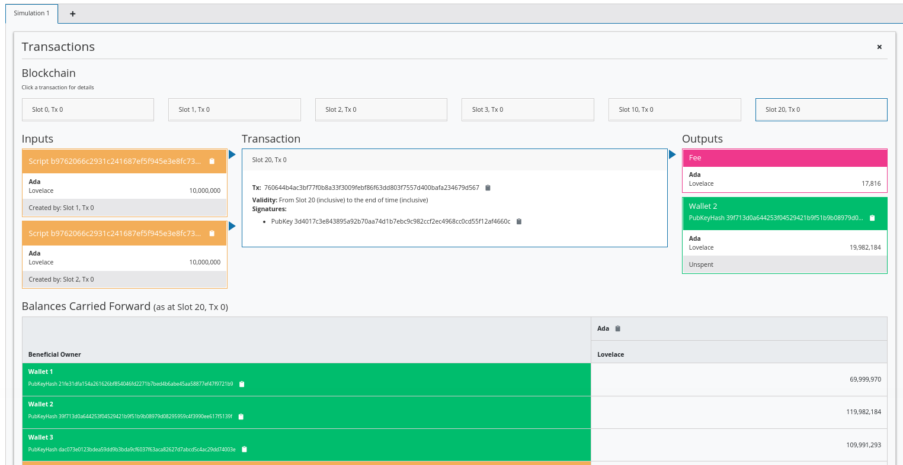
The final balances reflect the changes.
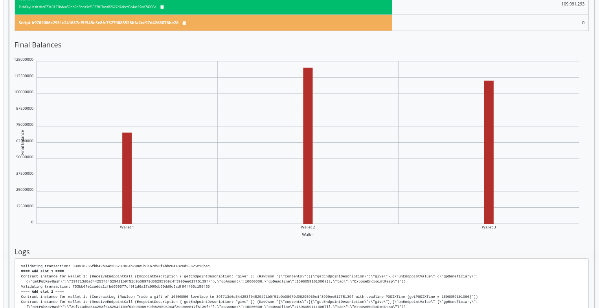
Now let\'s look at the case where the grab happens too early. We\'ll make Wallet 2 grab at slot 15 instead of slot 20.
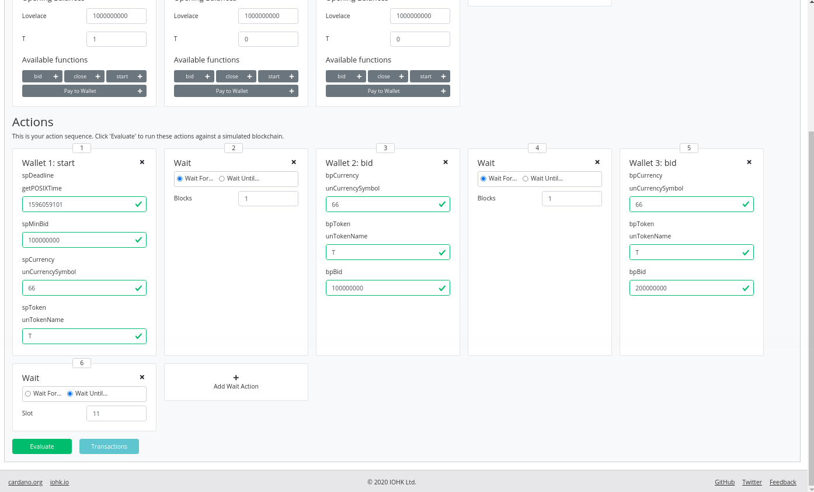
Now we see that the first transactions are the same, but that the final transaction at slot 15 has only one input, because the second UTxO is not yet available.
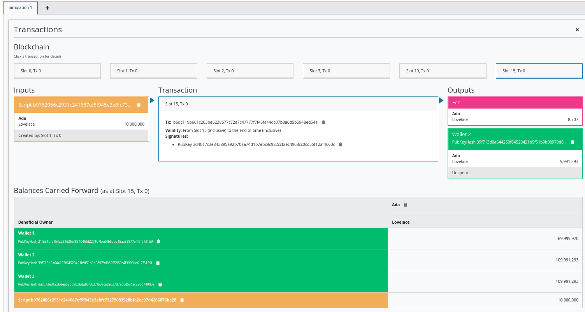
And we can see that there are 10 Ada still locked at the script address.
Our off-chain code was written in such a way that it will only submit a transaction if there is a suitable UTxO that can be grabbed. This means that we don\'t really exercise the validator because we are only sending transactions to the blockchain that will pass validation.
If you want to test the validator, you could modify the wallet code so that the grab endpoint attempts to grab everything and then validation will fail if you are not the beneficiary or the deadline has not been reached.
You need to keep in mind that anybody can write off-chain code. So, even
though it works now as long as you use the grab endpoint that we wrote
ourselves, somebody could write a different piece of off-chain code that
doesn\'t filter the UTxOs as we did. In this case, if the validator is
not correct something could be horribly wrong.
We\'ll start the next example by copying the code from the vesting
example into a new module called Week03.Parameterized.
Note that in the vesting example we used the Vesting type as the
datum, but it was just fixed, it didn\'t change. Alternatively, we could
have baked it into the contract, so to speak, so that we have a contract
where the script itself already contains the beneficiary and deadline
information.
All the examples of contracts we have seen so far were fixed. We used a
TypedValidator as a compile-time constant. The idea of parameterized
scripts is that you can have a parameter and, depending on the value of
the parameter, you get different values of TypedValidator.
So, instead of defining one script, with a single script address, with all UTxOs sitting at the same address, you can define a family of scripts that are parameterized by a given parameter. In our case, this will mean that UTxOs for different beneficiaries and/or deadlines will be a different script addresses, as they will have parameterized validators specific to their parameters rather than specific to the datum of the UTxO.
We are going to demonstrate how to do this by, instead of using datum for the beneficiary and deadline values, using a parameter.
Let\'s start by renaming VestingDatum to something more suitable.
data VestingParam = VestingParam
{ beneficiary :: PubKeyHash
, deadline :: POSIXTime
} deriving Show
We will also remove the unstableMakeIsData call as we don\'t need this
anymore.
The reason we don\'t need it, is because we are just going to use ()
for the datum in the mkValidator function. All the information we
require will be in a new argument to mkValidator, of type
VestingParam, which we add at the beginning of the list of arguments.
{-# INLINABLE mkValidator #-}
mkValidator :: VestingParam -> () -> () -> ScriptContext -> Bool
mkValidator p () () ctx = traceIfFalse "beneficiary's signature missing" signedByBeneficiary &&
traceIfFalse "deadline not reached" deadlineReached
where
info :: TxInfo
info = scriptContextTxInfo ctx
signedByBeneficiary :: Bool
signedByBeneficiary = txSignedBy info $ beneficiary p
deadlineReached :: Bool
deadlineReached = contains (from $ deadline p) $ txInfoValidRange info
We also change the Vesting type to reflect the change to the datum.
data Vesting
instance Scripts.ValidatorTypes Vesting where
type instance DatumType Vesting = ()
type instance RedeemerType Vesting = ()
Now, the TypedValidator will no longer be a constant value. Instead it
will take a parameter.
Recall that the function mkTypedValidator requires as its first
argument the compiled code of a function that takes three arguments and
returns a Bool. But now, it has four arguments, so we need to account
for that.
typedValidator :: VestingParam -> Scripts.TypedValidator Vesting
typedValidator p = Scripts.mkTypedValidator @Vesting
Now, what we would like to do is something like this, passing in the new
parameter p to mkValidator so that the compiled code within the
Oxford brackets would have the correct type.
-- this won't work
$$(PlutusTx.compile [|| mkValidator p ||])
$$(PlutusTx.compile [|| wrap ||])
where
wrap = Scripts.wrapValidator @() @()
This code will not work, but before we investigate, let\'s leave the code as it is for now and make some more changes to the rest of the code.
validator now will take a VestingParam and will return a composed
function. The returned function has the effect that any paramater passed
to validator would now effectively get passed to the typedValidator
function, whose return value would in turned get passed to the
validatorScript function.
validator :: VestingParam -> Validator
validator = Scripts.validatorScript . typedValidator
And the same for valHash and scrAddress.
valHash :: VestingParam -> Ledger.ValidatorHash
valHash = Scripts.validatorHash . typedValidator
scrAddress :: VestingParam -> Ledger.Address
scrAddress = scriptAddress . validator
Now, let\'s find out what\'s wrong with out typedValidator function.
If we try to launch the REPL, we get a compile error.
GHC Core to PLC plugin: E043:Error: Reference to a name which is not a local, a builtin, or an external INLINABLE function: Variable p
No unfolding
Context: Compiling expr: p
Context: Compiling expr: Week03.Parameterized.mkValidator p
Context: Compiling expr at "plutus-pioneer-program-week03-0.1.0.0-inplace:Week03.Parameterized:(67,10)-(67,48)"
The problem is this line.
-- this won't work
$$(PlutusTx.compile [|| mkValidator p ||])
Recall that everything inside the Oxford brackets must be explicitly
known at compile time. Normally it would even need all the code to be
written explicitly, but by using the INLINABLE pragma on the
mkValidator function we can reference the function instead. However,
it must still be known at compile time, because that\'s how Template
Haskell works - it is executed before the main compiler.
The p is not known at compile time, because we intend to supply it at
runtime. Luckily there is a way around this.
On the Haskell side, we have our mkValidator function and we have p
of type VestingParam. We can compile mkValidator to Plutus, but we
can\'t compile p to Plutus because we don\'t know what it is. But, if
we could get our hands on the compiled version of p, we could apply
this compiled version to the compiled mkValidator, and this would give
us what we want.
This seems to solve nothing, because we still need a compiled version of
p and we have the same problem that p is not known at compile time.
However, p is not some arbitrary Haskell code, it\'s data, so it
doesn\'t contain any function types. If we make the type of p an
instance of a type class called Lift. We can use liftCode to compile
p at runtime to Plutus Core and then, using applyCode we can apply
the Plutus Core p to the Plutus Core mkValidator.
Let\'s briefly look at the Lift class. It is defined in package
plutus-tx.
module PlutusTx.Lift.Class
It only has one function, Lift. However, we won\'t use this function
directly.
The importance of the class is that it allows us to, at runtime, lift
Haskell values into corresponding Plutus script values. And this is
exactly what we need to convert our parameter p into code.
We will use a different function, defined in the same package but in a different module.
module PlutusTx.Lift
The function we will use is called liftCode.
-- | Get a Plutus Core program corresponding to the given value as a 'CompiledCodeIn', throwing any errors that occur as exceptions and ignoring fresh names.
liftCode
:: (Lift.Lift uni a, Throwable uni fun, PLC.ToBuiltinMeaning uni fun)
=> a -> CompiledCodeIn uni fun a
liftCode x = unsafely $ safeLiftCode x
It takes a Haskell value of type a, provided a is an instance of the
Lift class, and turns it into a piece of Plutus script code
corresponding to the same type.
Now we can fix our validator.
typedValidator :: VestingParam -> Scripts.TypedValidator Vesting
typedValidator p = Scripts.mkTypedValidator @Vesting
($$(PlutusTx.compile [|| mkValidator ||]) `PlutusTx.applyCode` PlutusTx.liftCode p)
$$(PlutusTx.compile [|| wrap ||])
where
wrap = Scripts.wrapValidator @() @()
This code is fine, but it won\'t yet compile, because VestingParam is
not an instance of Lift. To fix this, we can use makeLift.
PlutusTx.makeLift ''VestingParam
And, we need to enable a GHC extension.
{-# LANGUAGE MultiParamTypeClasses #-}
Now it will compile.
The off-chain code hasn\'t changed much.
The GiveParams are still the same.
data GiveParams = GiveParams
{ gpBeneficiary :: !PubKeyHash
, gpDeadline :: !POSIXTime
, gpAmount :: !Integer
} deriving (Generic, ToJSON, FromJSON, ToSchema)
VestingSchema has slightly changed because the grab endpoint now
relies on knowing the beneficiary and deadline in order to know
determine the script address. We know the beneficiary because it will be
the public key hash of the wallet that calls grab, but we don\'t know
the deadline, so we must pass it to grab.
type VestingSchema =
Endpoint "give" GiveParams
.\/ Endpoint "grab" POSIXTime
The give endpoint is similar to the vesting example, but there are
some differences.
Instead of computing the datum, we will construct something of type
VestingParam. We also change the reference to the datum in
mustPayToTheScript to become (), and we provide the type p to
typedValidator as it is no longer a constant.
give :: AsContractError e => GiveParams -> Contract w s e ()
give gp = do
let p = VestingParam
{ beneficiary = gpBeneficiary gp
, deadline = gpDeadline gp
}
tx = mustPayToTheScript () $ Ada.lovelaceValueOf $ gpAmount gp
ledgerTx <- submitTxConstraints (typedValidator p) tx
void $ awaitTxConfirmed $ txId ledgerTx
logInfo @String $ printf "made a gift of %d lovelace to %s with deadline %s"
(gpAmount gp)
(show $ gpBeneficiary gp)
(show $ gpDeadline gp)
In the grab endpoint, there are also some changes.
Recall that earlier we got all the UTxOs sitting at this one script address and that they could be for arbitrary beneficiaries and for arbitrary deadlines. For this reason, we had to filter those UTxOs which were for us and where the deadline had been reached.
We now have the additional parameter, which we\'ll call d, which
represents the deadline. So we can immediately see if the deadline has
been reached or not.
If it has not been reached, we write a log message and stop, otherwise
we continue and construct the VestingParam.
Then, we look up the UTxOs that are sitting at this address. Address is not a constant anymore, it takes a parameter. So, now, we will only get UTxOs which are for us and that have a deadline that has been reached. We don\'t need to filter anything.
If there are none, we log a message to that effect and stop, otherwise we do more or less what we did before.
grab d = do
now <- currentTime
pkh <- pubKeyHash <$> ownPubKey
if now < d
then logInfo @String $ "too early"
else do
let p = VestingParam
{ beneficiary = pkh
, deadline = d
}
utxos <- utxoAt $ scrAddress p
if Map.null utxos
then logInfo @String $ "no gifts available"
else do
let orefs = fst <$> Map.toList utxos
lookups = Constraints.unspentOutputs utxos <>
Constraints.otherScript (validator p)
tx :: TxConstraints Void Void
tx = mconcat [mustSpendScriptOutput oref $ Redeemer $ PlutusTx.toData () | oref <- orefs] <>
mustValidateIn (from now)
ledgerTx <- submitTxConstraintsWith @Void lookups tx
void $ awaitTxConfirmed $ txId ledgerTx
logInfo @String $ "collected gifts"
The endpoints function is slightly different due to the new parameter
for grab.
endpoints :: Contract () VestingSchema Text ()
endpoints = (give' `select` grab') >> endpoints
where
give' = endpoint @"give" >>= give
grab' = endpoint @"grab" >>= grab
We will now copy and paste this new contract into the playground and setup a new scenario.
The give transactions are the same.
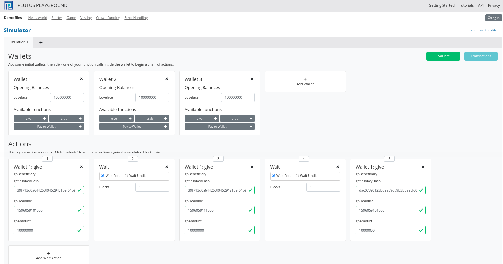
The grab is slightly different. In our earlier implementation, one
wallet could grab UTxOs with different deadlines provided that the
deadlines had passed. Now the deadline is part of the script parameter,
so we need to specify it in order to get the script address. This means
that Wallet 2 cannot grab the gifts for slots 10 and 20 at the same
time, at least not in the way that we have implemented it.
First we can wait until slot 10 and then Wallet 2 should be able to grab its first gift and Wallet 3 should be able to claim its single gift.
We\'ll add a grab for Wallets 2 and 3. Here, we don\'t need to wain in
between each transaction because it is two different wallets.
We then wait until slot 20 and perform Wallet 2\'s second grab and
then wait for 1 block, as usual.
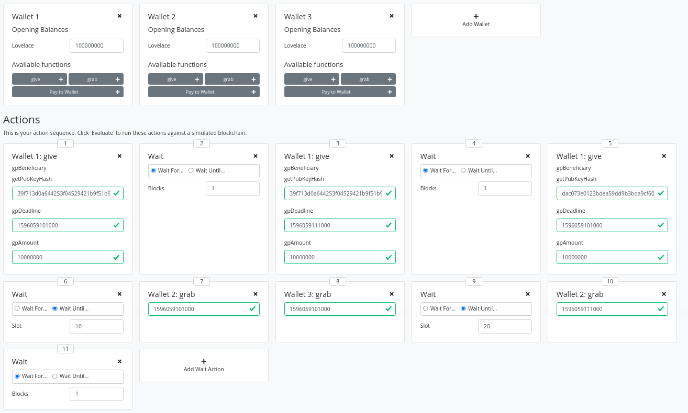
So let\'s see if it works by clicking Evaluate.
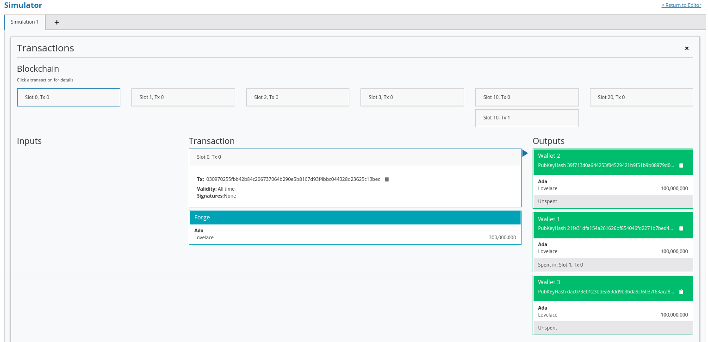
Take note of the script address for that transaction out at slot 1.
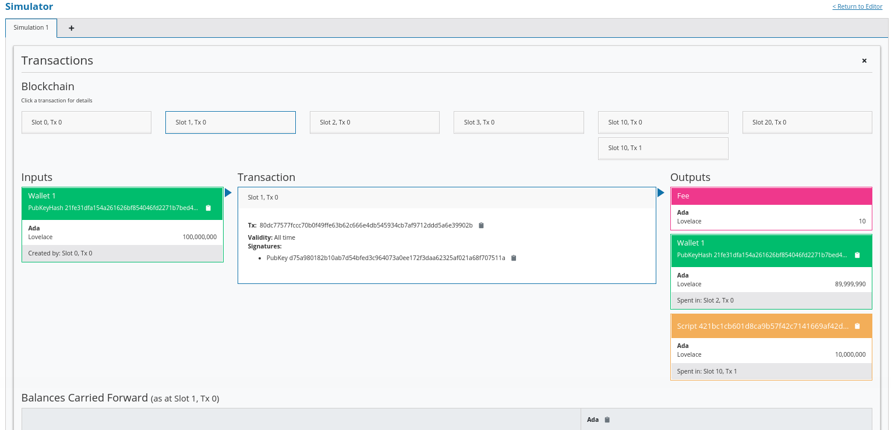
And compare this with the script address for the transaction output at slot 2.
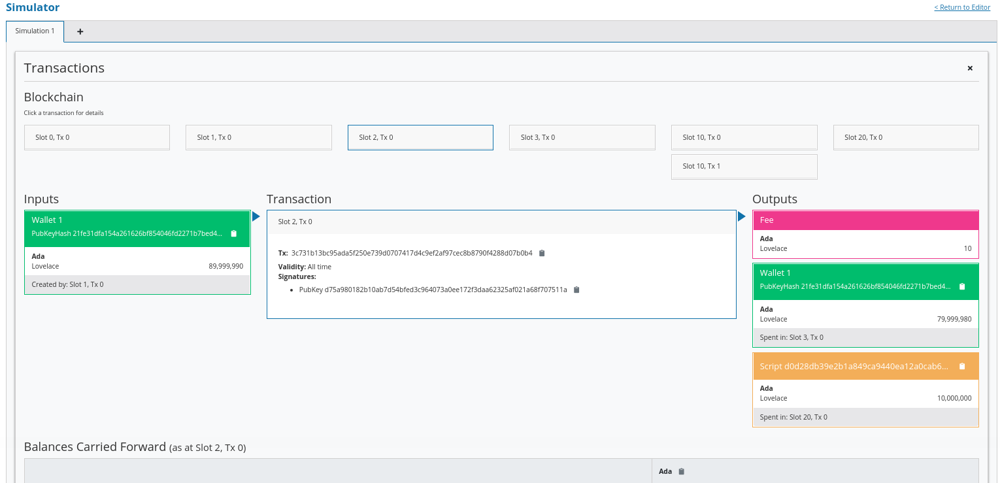
Notice that the script address for the UTxOs is different. In our first version of the vesting contract, the script address was a constant. This meant that all our gifts ended up at the same script address and only the datum in each UTxO was different.
Now, the datum is just () and the beneficiary and the deadline are
included as part of the script itself, so the addresses are now
different depending on the beneficiary and deadline parameters.
For the gift to Wallet 3 we see yet another address.
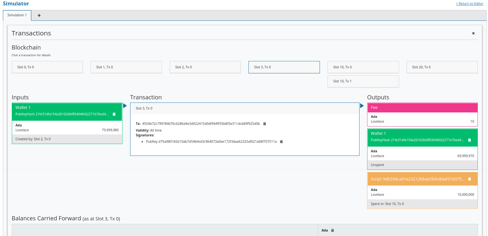
We see two grabs in slot 10, one by Wallets 2 and one by Wallet 3. The order in which they are processed is not deterministic.
Then, finally in slot 20, Wallet 2 grabs its remaining gift.
And the final balances reflect the transactions that have occurred.
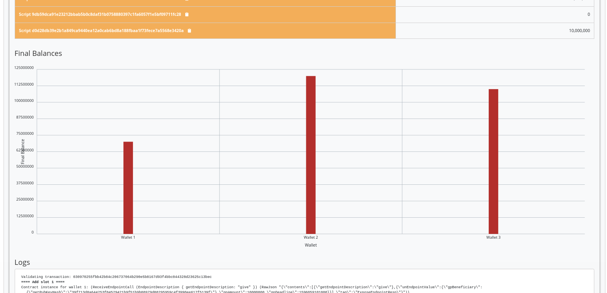